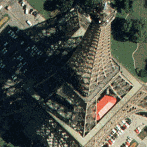
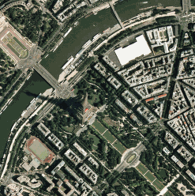

M r S I
D в M a p I n f o P r o f e s s i o n
a l
GeoExpress 3.0
для Windows 9х/NT/2000/XP, Solaris, Linux - лидирующая технология сжатия и
промотра растровых изображений, созданная специально для работы со
снимками земной поверхности обычно имеющих большой размер. Программа
использует алгоритм компрессии информации вейвлетами - геометрически более
эффективный по сравнению с косинусным преобразованием. Основа
вейвлет-анализа изображений - разложение исходного растра с помощью
последовательно включенных систем "вертикальных" и "горизонтальных"
дискретных отрогональных фильтров на компоненты, которые в дальнейшем
можно обрабатывать независимо. Таким образом, растровый файл сжимается в
20 - 100 раз, сохраняя высокое качество и геометрическая точность
изображений. Формат MrSID - новый стандарт для разработки сложных
графических решений, публикации в Интернете, вывода графики на печать или
использования в мультимедийных проектах.
MrSID - это акроним от
Multi-resolution Seamless Image Database (База данных сшитых в одно
изображение в нескольких разрешениях), т.е сжатый снимок может иметь
несколько заранее созданных уровней разрешения. MrSID позволяет сжимать
изображения любого размера, разбивая его на отдельные части без швов. Этот
подход позволяет иметь доступ ко всему изображению сразу, позволяя "на
лету" осуществлять декомпрессию той части изображения, которая необходима.
Этот способ сжатия особенно эффективен при составлении и просмотре мозаик
снимков, выборочной декомпрессии части снимка и при удаленном доступе к
изображениям. В программу просмотра передается только та часть снимка,
которая может сформировать изображение на экране компьютера при выбранном
размере окна, масштабе показа и качестве изображения.
Для хранения
оригиналов снимков предусмотрен вариант сжатия без потерь. В этом случае,
полностью сохраняются значения каждого элемента изображения (пикселя) и
характерные особенности сжатия вейвлетами, используются только для
оптимизации доступа к фрагментам изображений и мозаикам снимков. Файлы,
сжатые этим методом можно использовать для создания архивов снимков. Такие
снимки можно использовать для дешифрирования объектов, создания
производных и составных снимков, а впоследствии, по мере необходимости,
сжимать повторно, уже с большим коэффициентом сжатия.
Кроме того, на основе
архива снимков, сжатых без потерь данных, удобно составлять мозаику
снимков, в том числе и разновременную, в которой части изображений,
относящиеся к одной области, хранятся вместе и могут использоваться для
анализа изменений.
При построении мозаики
используются все хранящиеся в указанной папке снимки в формате MrSID, как
составные, так и одиночные, и мозаика строится на основе информации о
привязке и проекции снимка, хранящейся внутри каждого файла или в
файлах-заголовках. Каждый составной файл можно повторно использовать либо
для сотавления мозаики на большую территорию покрытия, либо для включения
разновременных снимков, либо для изменения коэффициента сжатия конечного
изображения.
В новой версии
программы сжатия в формат MrSID, которая теперь называется GeoExpress 3.0,
изменилась форма оплаты за пользование этой программой. Теперь стоимость
самой программы резко снижена, но введена оплата за объем сжимаемой
растровой информации. Для того чтобы использовать программу для сжатия
исходных снимков, полученных не в формате MrSID, а, например, в формате
TIFF или GeoTIFF — наиболее распространенных из получаемых со сканеров и
из доступных источников данных дистанционного зондирования - требуется
купить лицензию (Data Cartridge) на обработку необходимого объема данных.
Минимальная лицензия дает право на обработку 10 Гигабайт данных на входе в
формате отличном от MrSID. При этом следует учитывать, что использование
повторно обрабатываемых файлов в формате MrSID не требует использования и
расходования лицензии на обработку.
В новой версии
существенно увеличена скорость обработки файлов снимков неограниченного
размера. Для некоторых из них скорость сжатия увеличилась в три раза. При
этом не создаются временные файлы и снизились требования к
производительности компьютера, на котором осуществляется сжатие
файлов.
Можете ли Вы представить себе, что
вы работаете с растровым изображением размером в несколько гигабайт,
прокручиваете его, масштабируете и все это происходит в считанные секунды?
При этом при увеличении изображения его качество становится не хуже, а
лучше!
Все это стало реальностью благодаря
разработанной компанией LizardTech, Inc. новой технологии сжатия растровых
изображений - MrSID (Multiresolution Seamless Image Database). Корпорация
MapInfo заключила партнерское соглашение с компанией LizardTech и
результатом этого сотрудничества стала поддержка формата MrSID в MapInfo
Professional. Теперь пользователи MapInfo Professional 7.0 имеют
возможность открывать и манипулировать изображениями в формате MrSID,
также как и другими поддерживаемыми MapInfo растровыми форматами, включая
наложение векторных слоев на растр и регистрацию изображений.
Формат MrSID быстро становится
стандартом для растровых изображений. Он позволяет увеличить эффективность
работы с растровыми изображениями высокого разрешения за счет уменьшения
времени передачи файлов и требования к занимаемому дисковому пространству,
в тоже время, сохраняя высокое качество и точность изображений.
Прежде всего, технология сжатия
MrSID ориентирована на приложения профессиональной картографии и ГИС,
издательскую деятельность, документооборот и другие области, где
используются большое количество растровых изображений высокого разрешения.
Везде где используются фотографии большого формата, карты, документы,
спутниковые и аэрофотографии, медицинские снимки, распечатки векторных
карт, инженерные чертежи - технология MrSID может сделать жизнь легче, а
работу более продуктивной. Ниже перечислены основные особенности новой
технологии:
Превосходное качество
изображений


MrSID позволяет достичь
самого высокого качества компрессированных изображений, превосходя все
существующие компрессоры. Компрессоры, основанные на JPEG-технологии,
создают артефакты, значительно ухудшающие качество изображений.
Многоуровневое
разрешение
На иллюстрации изображение в формате
MrSID (размер файла 1.6Mb). Файл получен путем преобразования в формат
MrSID исходного TIF файла размером 48Mb. Справа, увеличенный фрагмент
этого же растра MrSID в MapInfo.
Используя MrSID, можно просматривать
любую часть изображения с любым разрешением и очень высокой скоростью.
MrSID позволяет непрерывно создавать новый уровень разрешения, дополняя
текущее изображение только теми новыми данными, которые необходимы, чтобы
создать новый уровень разрешения. В отличие от других растровых форматов,
которые могут содержать несколько заранее созданных уровней разрешения из
исходного изображения, MrSID создает новое разрешение "на лету". Файл в
формате MrSID может иметь любое число разрешений. Это означает, что очень
большие изображения (терабайты данных), могут быстро декомпрессироваться и
просматриваться на системах обычного уровня.
Бесшовная прокрутка
листов
MrSID позволяет сжимать изображения
любого размера без швов. Этот подход позволяет иметь доступ ко всему
изображению сразу, позволяю "на лету" осуществлять декомпрессию той части
изображения, которая необходима. Посколько файл MrSID может содержать
множество листов изображения, отпадает необходимость искать среди сотен
файлов нужный лист, или например, загружать множество файлов чтобы
отобразить большую карту, или набор спутниковых/аэрофотографий.
Избирательная
декомпрессия
MrSID использует wavelet
-технологию, не имеющую аналогов на сегодняшний день и уникальный метод
хранения информации о каждом пикселе изображения в базе данных
изображения. MrSID использует патентованную технологию для доступа к этой
базе данных и быстрой декомпрессии только выбранной части изображения. Эту
технологию назвали избирательной декомпрессией и именно она позволяет
осуществлять быстрое манипулирования большими изображениями на настольном
компьютере или даже через интернет.
Высший коэффициент
сжатия
MrSID позволяет достичь более
высокого уровня компрессии, чем любой другой существующий метод. Что бы Вы
предпочли: набор из 40 CD ROM содержащих тысячи отдельных частей
изображения или один CD ROM содержащий все эти изображения в одном легко
доступном и удобном для манипулирования файле? MrSID позволяет сделать
это! Кроме того, компрессор MrSID, позволяет задать требуемый уровень
сжатия.
Быстрая работа с
большими изображениями
MrSID позволяет сжимать любые
изображения любого размера с минимальной потерей или без потери качества
изображения, даже при очень высоких коэффициентах компрессии. Реальный
коэффициент компрессии, зависит от содержания изображения и глубины цвета,
но в среднем составляет 20:1 для изображений в оттенках серого и 1:50 для
полноцветных изображений.
MrSID позволяет достичь самых
высоких результатов сжатия растровых изображений на сегодняшний день. Одна
из проблем связанных с очень большими растровыми изображениями это
количество времени, требуемое на открытие файла. Чем больше размер файла,
тем больше времени уйдет даже на то чтобы просто открыть файл. Например,
открытие 50 MB TIFF изображения может занять несколько минут даже на
современных системах; в то время как тот же файл сжатый в формате MrSID
потребует для открытия только 5 секунд, и это будет не предварительный
просмотр или копия низкого разрешения, это будет реальное изображение!
Такой же быстрый доступ может быть осуществлен к любой части изображения,
любого размера и любого разрешения.
Компания Lizardtech представляет
следующую линейку продуктов:
Компрессоры
Компрессоры позволяют сжать исходное
растровое изображение. В настоящее время компрессоры MrSID поддерживают
следующие растровые форматы: 8-bit (оттенки серого) и 24-bit (RGB) растры
TIFF, TIFF с TFW (геопривязкой), LAN, USGS DOQ, BIL, BSQ, BIP с HDRs, и
Sun Raster (многоспектральные снимки в настоящее время должны быть
преобразованы в 3-канальные).
Существует две разновидности
компрессоров MrSID Professional и MrSID Publisher. MrSID Professional
имеет ограничение суммарного размера не компрессированных изображений на
входе - 500 мегабайт, версия MrSID Publisher не имеет
ограничений.
Просмотрщики
MrSID Viewer - самостоятельное
приложение для просмотра и экспорта изображений MrSID в формат TIFF (с TFW
- геопривязкой) для импорта в другие приложения
MrSID Online Viewer - для просмотра
изображений MrSID в интернет
MrSID Viewer for PhotoShop - для
просмотра и использования изображений MrSID в PhotoShop
MrSID ActiveX Control - позволяет
внедрить функции просмотра изображений MrSID в приложения, поддерживающие
технологию ActiveX
MrSID Decompression Library
Interface - API позволяющее разработчикам создать собственное приложение
работающее с форматом MrSID.
Все просмотрщики файлов MrSID
являются бесплатными.
Серверное
приложение
MrSID Express
Server - позволяет создавать огромные
массивы изображений высокого разрешения, для быстрой обработки в интернет,
снимая противоречие качество - размеры файлов, для преодоления скоростных
ограничений интернет. Компрессируя снимки высокого разрешения в файл
формата MrSID .sid используя один из копрессоров MrSID, можно
распространять через интернет изображения практически любого размера и
разрешения. При этом пользователи смогут просматривать изображения,
используя любой стандартный веб браузер. Немало важно и то, что как и все
просмотрщики формата MrSID, Image Server - бесплатный.
Загрузить просмотрщики MrSID, а
также модуль для поддержки сжатых растров MrSID в MapInfo Professional
7.0, можно со странички компании LizardTech, Inc. по адресу http://www.lizardtech.com